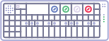
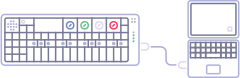

<html>
  <head>
    <link rel="stylesheet" href="style.css">
    <script src="vue.js"></script>
  </head>
  <body>
    
    <div id="app">
      <transition name="flop">
        <component
          :is="currentView"
          :patches="patches"
          :downloading="downloading"
          :current-list-id="currentListId"
          :login-error="loginError"
          :is-logged-in="isLoggedIn"
          :connected="connected"
          @go="goToView"
          @showlist="showList"
          @error="setLoginError"
          @log-out="setLoggedInFalse"
          @log-in="setLoggedInTrue"
          @mount-op1="mountOP1"
        ></component>
      </transition>
    </div>
    
    <script type="x-template" id="login">
      <div>
        <div v-if="isLoggedIn" class="back" @click="$emit('go', 'browser')">
          <span>&larr;</span> Back
        </div>
        
        <div class="login">
          <div class="intro">
            
            <h1>op1.fun.app</h1>
            <h5>v 1.0</h5>
          </div>
          
          <form v-if="isLoggedIn" @submit.prevent="logOut">
            <div class="field">
              <label for="email">Logged in as</label>
              <div>{{ email }}</div>
            </div>
            <button>Log Out</button>
          </form>
          
          <form v-else @submit.prevent="logIn">
            <div class="field">
              <label for="email">Email</label>
              <input v-model="email" type="text">
            </div>
            <div class="field">
              <label for="password">Password</label>
              <input v-model="password" type="password">
            </div>
            
            <div v-if="loginError !== ''" class="error">
              {{loginError}}
            </div>
            
            <button>Log In</button>
          </form>
          
        </div>
      </div>
    </script>
    
    <script type="x-template" id="browser">
      <div class="app-main">
        <div class="header">
          <h1>op1.fun</h1>
          <div class="icon config-icon" @click="$emit('go', 'login')">
            
          </div>
          <transition name="fade">
            <div v-if="downloading" class="icon spinner">
              <span>{{ downloading }}</span>
              
            </div>
          </transition>
          <div class="clear"></div>
        </div>
        <div class="browser">
          <side-nav
            :patches="patches"
            :currentListId="currentListId"
            @showlist="$emit('showlist', $event)"
          ></side-nav>
          <div class="browser-content">
            <content-area
              v-if="connected"
              :currentListId="currentListId"
              :patches="filteredPatches"
              :id="currentListId"
            ></content-area>
            <disconnected v-else @mount-op1="$emit('mount-op1')"></disconnected>
          </div>
        </div>
      </div>
    </script>
    
    <script type="x-template" id="patch-list">
      <div :id="id" class="patch-list">
        <ul>
          <template v-for="(packPatches, packName) in packs">
            <li :key="packName" v-if="packName !== 'null'">
              <a @click.prevent="showInFinder" :href="packPatches[0].packDir" class="pack">
                <svg xmlns="http://www.w3.org/2000/svg" viewBox="0 0 32 32" width="32" height="32" fill="none" stroke="currentcolor">
                  <path d="M0 4 L0 28 L32 28 L32 8 L16 8 L12 4 z" vector-effect="non-scaling-stroke"></path>
                </svg>
                {{ packName }}
              </a>
            </li>
            <li v-for="patch in packPatches" :key="patch.relPath" :class="{ root: packName === 'null' }">
              <a @click.prevent="showInFinder" :href="patch.relPath" class="patch">
                {{ patch.name }}
              </a>
            </li>
          </template>
        </ul>
      </div>
    </script>
    
    <script type="x-template" id="backups">
      <div>
        Hi this is backups
      </div>
    </script>
    
    <script type="x-template" id="disconnected">
      <div class="disconnected">
        
        <h2>Please connect your OP-1 and put it in disk mode.</h2>
        <button @click="$emit('mount-op1')">Retry</button>
      </div>
    </script>
    
    <script type="x-template" id="side-nav">
      <ul class="side-nav">
        <li v-for="item in navItems">
          <a @click.prevent="$emit('showlist', item.id)" :href="item.title.toLowerCase()" :class="[{ active: (item.id === currentListId) }, item.id ]">
            <h3 v-bind:class="item.id">
              <span class="icon" v-if="item.id === 'synth'">
                <svg version="1.1" xmlns="http://www.w3.org/2000/svg" xmlns:xlink="http://www.w3.org/1999/xlink" viewBox="0 0 42.281 21.487" xml:space="preserve">
                  <path style="fill:none;stroke:currentColor;stroke-width:1.5;stroke-linecap:square;" d="M41.531,4.139 c0-1.872-1.521-3.389-3.394-3.389s-3.393,1.517-3.393,3.389l0.031,13.206c0,1.873-1.521,3.392-3.395,3.392 c-1.875,0-3.392-1.519-3.392-3.392V4.139c0-1.872-1.521-3.389-3.39-3.389c-1.875,0-3.396,1.517-3.396,3.389l-0.08,13.206 c0,1.873-1.519,3.392-3.391,3.392s-3.393-1.519-3.393-3.392V4.139c0-1.872-1.518-3.389-3.392-3.389C9.07,0.75,7.55,2.267,7.55,4.139 L7.531,17.343c0,1.874-1.519,3.392-3.389,3.392c-1.875,0-3.392-1.518-3.392-3.392"/>
                </svg>
              </span>
              <span v-if="item.id === 'drum'">
                <svg version="1.1" xmlns="http://www.w3.org/2000/svg" xmlns:xlink="http://www.w3.org/1999/xlink" viewBox="0 0 16.308 18.638" xml:space="preserve">
                  <g>
                  	<circle style="fill:none;stroke:currentColor;stroke-width:2;" cx="8.154" cy="8.154" r="7.154"/>
                  	<path style="fill:currentColor;stroke:currentColor;" d="M9.571,9.501c0,0.782-0.635,1.417-1.417,1.417s-1.416-0.705-1.416-1.487 s0.634-1.346,1.416-1.346C8.936,8.085,9.571,8.719,9.571,9.501z"/>
                  	<line style="fill:none;stroke:currentColor;stroke-width:2;" x1="8.154" y1="18.638" x2="8.154" y2="9.572"/>
                  </g>
                </svg>
              </span>
              <span v-if="item.id === 'sampler'">
                <svg version="1.1" xmlns="http://www.w3.org/2000/svg" xmlns:xlink="http://www.w3.org/1999/xlink" viewBox="-457.3 270.8 40.8 21.5" xml:space="preserve">
                  <path style="fill:none;stroke:currentColor;stroke-width:1.5;stroke-linecap:square;" d="M-417.3,277.4c0-1.8-1.5-3.3-3.3-3.3c-1.8,0-3.3,1.5-3.3,3.3l0,10.9c0,1.8-1.5,3.3-3.3,3.3 c-1.8,0-3.3-1.5-3.3-3.3v-8.5c0-1.8-1.5-3.3-3.3-3.3c-1.8,0-3.3,1.5-3.3,3.3v1c0,1.8-1.5,3.3-3.3,3.3c-1.8,0-3.3-1.5-3.3-3.3v-6 c0-1.8-1.5-3.3-3.3-3.3c-1.8,0-3.3,1.5-3.3,3.3l0,8.5c0,1.8-1.5,3.3-3.3,3.3c-1.8,0-3.3-1.5-3.3-3.3"/>
                </svg>
              </span>
              {{ item.title }}
            </h3>
            <span>{{ item.subtitle }}</span>
          </a>
        </li>
      </ul>
    </script>
    
    <script src="front-end.js"></script>
  </body>
</html>
